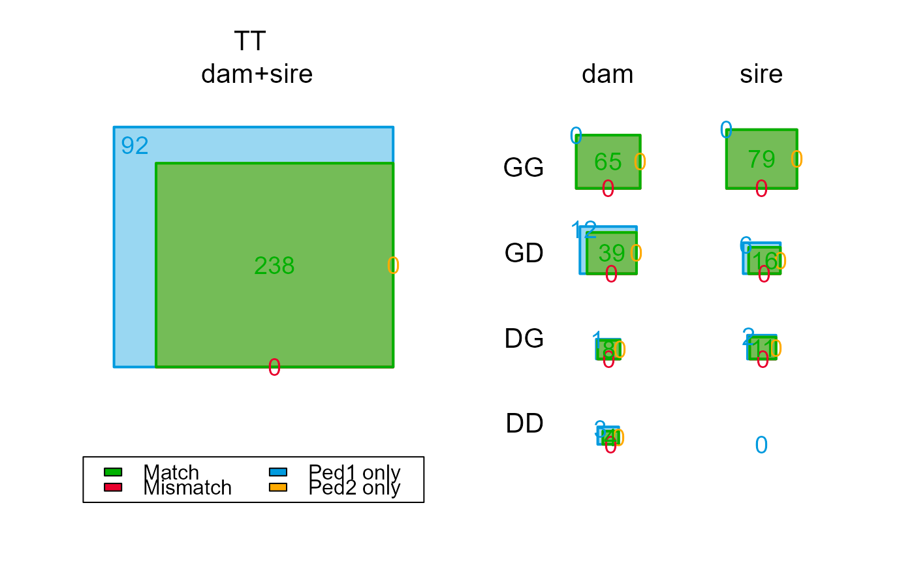
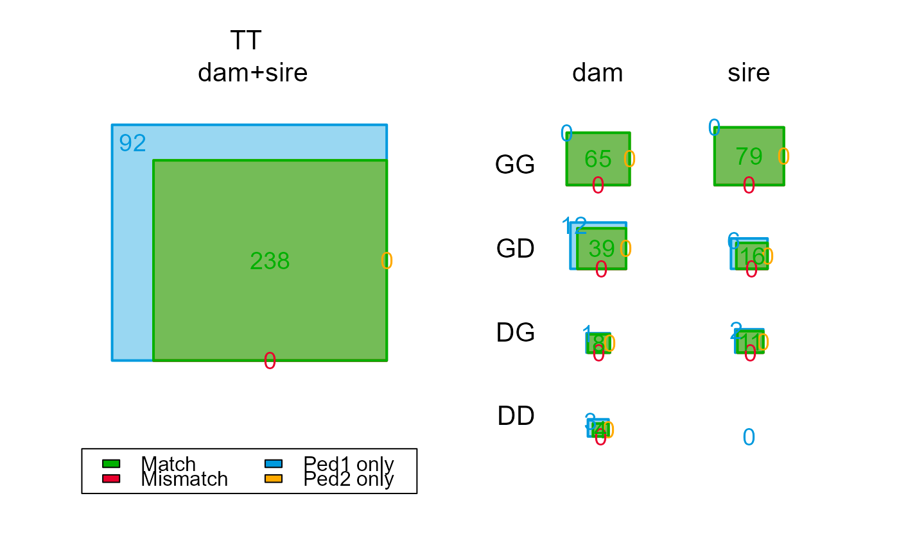

Compare Two Pedigrees
PedCompare.RdCompare an inferred pedigree (Ped2) to a previous or simulated pedigree (Ped1), including comparison of sibship clusters and sibship grandparents.
Usage
PedCompare(
Ped1 = NULL,
Ped2 = NULL,
DumPrefix = c("F0", "M0"),
SNPd = NULL,
Symmetrical = TRUE,
minSibSize = "1sib1GP",
Plot = TRUE
)Arguments
- Ped1
first (e.g. original) pedigree, dataframe with columns id-dam-sire; only the first 3 columns will be used.
- Ped2
second pedigree, e.g. newly inferred
SeqOUT$PedigreeorSeqOUT$PedigreePar, with columns id-dam-sire.- DumPrefix
character vector with the prefixes identifying dummy individuals in
Ped2. Use 'F0' ('M0') to avoid matching to regular individuals with IDs starting with 'F' ('M'), providedPed2has fewer than 999 dummy females (males).- SNPd
character vector with IDs of genotyped individuals. If
NULL, defaults to the IDs occurring in bothPed1andPed2and not starting with any of the prefixes inDumPrefix.- Symmetrical
when determining the category of individuals (Genotyped/Dummy/X), use the 'highest' category across the two pedigrees (
TRUE, default) or only considerPed1(Symmetrical = FALSE).- minSibSize
minimum requirements to be considered 'dummifiable', passed to
getAssignCat:'1sib' : sibship of size 1, with or without grandparents. The latter aren't really a sibship, but can be useful in some situations.
'1sib1GP': sibship of size 1 with at least 1 grandparent (default)
'2sib': at least 2 siblings, with or without grandparents (default prior to version 2.4)
- Plot
show square Venn diagrams of counts?
Value
A list with
- Counts
A 7 x 5 x 2 named numeric array with the number of matches and mismatches, see below
- Counts.detail
a large numeric array with number of matches and mismatches, with more detail for all possible combination of categories
- MergedPed
A dataframe with side-by-side comparison of the two pedigrees
- ConsensusPed
A consensus pedigree, with Pedigree 2 taking priority over Pedigree 1
- DummyMatch
Dataframe with all dummy IDs in Pedigree 2 (id.2), and the best-matching individual in Pedigree 1 (id.1). Also includes the class of the dam & sire, as well as counts of offspring per outcome class (off.Match, off.Mismatch, etc.)
- Mismatch
A subset of MergedPed with mismatches between Ped1 and Ped2, as defined below
- Ped1only
as Mismatches, with parents in Ped1 that were not assigned in Ped2
- Ped2only
as Mismatches, with parents in Ped2 that were missing in Ped1
'MergedPed', 'Mismatch', 'Ped1only' and 'Ped2only' provide the following columns:
- id
All ids in both Pedigree 1 and 2. For dummy individuals, this is the id in pedigree 2
- dam.1, sire.1
parents in Pedigree 1
- dam.2, sire.2
parents in Pedigree 2
- id.r, dam.r, sire.r
The real id of dummy individuals or parents in Pedigree 2, i.e. the best-matching non-genotyped individual in Pedigree 1, or "nomatch". If a sibship in Pedigree 1 is divided over 2 sibships in Pedigree 2, the smaller one will be denoted as "nomatch"
- id.dam.cat, id.sire.cat
the category of the individual (first letter) and highest category of the dam (sire) in Pedigree 1 or 2: G=Genotyped, D=(potential) dummy, X=none. Individual, one-letter categories are generated by
getAssignCat. Using the 'best' category from both pedigrees makes comparison between two inferred pedigrees symmetrical and more intuitive.- dam.class, sire.class
classification of dam and sire: Match, Mismatch, P1only, P2only, or '_' when no parent is assigned in either pedigree
The first dimension of Counts denotes the following categories:
- GG
Genotyped individual, assigned a genotyped parent in either pedigree
- GD
Genotyped individual, assigned a dummy parent, or at least 1 genotyped sibling or a genotyped grandparent in Pedigree 1)
- GT
Genotyped individual, total
- DG
Dummy individual, assigned a genotyped parent (i.e., grandparent of the sibship in Pedigree 2)
- DD
Dummy individual, assigned a dummy parent (i.e., avuncular relationship between sibships in Pedigree 2)
- DT
Dummy total
- TT
Total total, includes all genotyped individuals, plus non-genotyped individuals in Pedigree 1, plus non-replaced dummy individuals (see below) in Pedigree 2
The second dimension of Counts gives the outcomes:
- Total
The total number of individuals with a parent assigned in either or both pedigrees
- Match
The same parent is assigned in both pedigrees (non-missing). For dummy parents, it is considered a match if the inferred sibship which contains the most offspring of a non-genotyped parent, consists for more than half of this individual's offspring.
- Mismatch
Different parents assigned in the two pedigrees. When a sibship according to Pedigree 1 is split over two sibships in Pedigree 2, the smaller fraction is included in the count here.
- P1only
Parent in Pedigree 1 but not 2; includes non-assignable parents (e.g. not genotyped and no genotyped offspring).
- P2only
Parent in Pedigree 2 but not 1.
The third dimension Counts separates between maternal and paternal
assignments, where e.g. paternal 'DT' is the assignment of fathers to both
maternal and paternal sibships (i.e., to dummies of both sexes).
In 'ConsensusPed', the priority used is parent.r (if not "nomatch") > parent.2 > parent.1. The columns 'id.cat', dam.cat' and 'sire.cat' have two additional levels compared to 'MergedPed':
- G
Genotyped
- D
Dummy individual (in Pedigree 2)
- R
Dummy individual in pedigree 2 replaced by best matching non-genotyped individual in pedigree 1
- U
Ungenotyped, Unconfirmed (parent in Pedigree 1, with no dummy match in Pedigree 2)
- X
No parent in either pedigree
Details
The comparison is divided into different classes of `assignable'
parents (getAssignCat). This includes cases where the focal
individual and parent according to Ped1 are both Genotyped (G-G), as well
as cases where the non-genotyped parent according to Ped1 can be lined up
with a sibship Dummy parent in Ped2 (G-D), or where the non-genotyped focal
individual in Ped1 can be matched to a dummy individual in Ped2 (D-G and
D-D). If SNPd is NULL (the default), and DumPrefix is set to NULL, the
intersect between the IDs in Pedigrees 1 and 2 is taken as the vector of
genotyped individuals.
Assignable
Note that 'assignable' may be overly optimistic. Some parents from
Ped1 indicated as assignable may never be assigned by sequoia, for
example parent-offspring pairs where it cannot be determined which is the
older of the two, or grandparents that are indistinguishable from full
avuncular (i.e. genetics inconclusive because the candidate has no parent
assigned, and ageprior inconclusive).
Dummifiable
Considered as potential dummy individuals are all non-genotyped individuals in Pedigree 1 who have, according to either pedigree, at least 2 genotyped offspring, or at least one genotyped offspring and a genotyped parent.
Mismatches
Perhaps unexpectedly, cases where all siblings are correct but a dummy
parent rather than the genotyped Ped1-parent are assigned, are classified
as a mismatch (for each of the siblings). These are typically due to a too
low assumed genotyping error rate, a wrong parental birth year, or some
other issue that requires user inspection. To identify these cases,
ComparePairs may be of help.
Genotyped 'mystery samples'
If Pedigree 2 includes samples for which the ID is unknown, the behaviour of
PedCompare depends on whether the temporary IDs for these samples are
included in SNPd. If they are included, matching (actual) IDs in
Pedigree 1 will be flagged as mismatches (because the IDs differ). If they
are not included in SNPd, or SNPd is not explicitly provided,
matches are accepted, as the situation is indistinguishable from comparing
dummy parents across pedigrees.
This is of course all conditional on relatives of the mystery sample being assigned in Pedigree 2.
See also
ComparePairs for comparison of all pairwise
relationships in 2 pedigrees; EstConf for repeated
simulate-reconstruct-compare; getAssignCat for all parents in
the reference pedigree that could have been assigned;
CalcOHLLR to check how well an 'old' pedigree fits with the
SNP data.
Author
Jisca Huisman, jisca.huisman@gmail.com
Examples
compare <- PedCompare(Ped_griffin, SeqOUT_griffin$Pedigree)
 compare$Counts["TT",,] # totals only; 45 dams & 47 sires non-assigned
#> parent
#> class dam sire
#> Total 167 163
#> Match 122 116
#> Mismatch 0 0
#> P1only 45 47
#> P2only 0 0
compare$Counts[,,"dam"] # dams only
#> class
#> cat Total Match Mismatch P1only P2only
#> GG 65 65 0 0 0
#> GD 56 41 0 15 0
#> GT 125 106 0 19 0
#> DG 23 12 0 11 0
#> DD 12 4 0 8 0
#> DT 39 16 0 23 0
#> TT 167 122 0 45 0
# inspect non-assigned in Ped2, id genotyped, dam might-be-dummy
PedM <- compare$MergedPed # for brevity
PedM[PedM$id.dam.cat=='GD' & PedM$dam.class=='P1only',]
#> id dam.1 sire.1 dam.2 sire.2 id.r dam.r
#> 42 i028_2002_M i005_2001_F <NA> <NA> <NA> i028_2002_M <NA>
#> 45 i033_2002_F i013_2001_F <NA> <NA> <NA> i033_2002_F <NA>
#> 46 i034_2002_F i011_2001_F <NA> <NA> <NA> i034_2002_F <NA>
#> 53 i044_2003_F i011_2001_F i019_2001_M <NA> <NA> i044_2003_F <NA>
#> 61 i055_2003_M i012_2001_F i040_2002_M <NA> i040_2002_M i055_2003_M <NA>
#> 63 i059_2003_M i013_2001_F i036_2002_M <NA> i036_2002_M i059_2003_M <NA>
#> 65 i062_2004_M i012_2001_F i058_2003_M <NA> <NA> i062_2004_M <NA>
#> 68 i067_2004_F i005_2001_F i029_2002_M <NA> i029_2002_M i067_2004_F <NA>
#> 72 i072_2004_M i048_2003_F i010_2001_M <NA> <NA> i072_2004_M <NA>
#> 73 i073_2004_M i060_2003_F i003_2001_M <NA> <NA> i073_2004_M <NA>
#> 102 i113_2006_M i087_2005_F i053_2003_M <NA> <NA> i113_2006_M <NA>
#> 103 i114_2006_M i060_2003_F i090_2005_M <NA> <NA> i114_2006_M <NA>
#> 111 i126_2007_F i100_2005_F i120_2006_M <NA> M0007 i126_2007_F <NA>
#> 112 i127_2007_M i087_2005_F i085_2005_M <NA> <NA> i127_2007_M <NA>
#> 132 i157_2008_F i125_2007_F i082_2005_M <NA> <NA> i157_2008_F <NA>
#> sire.r id.dam.cat id.sire.cat dam.class sire.class
#> 42 <NA> GD GX P1only _
#> 45 <NA> GD GX P1only _
#> 46 <NA> GD GX P1only _
#> 53 <NA> GD GD P1only P1only
#> 61 <NA> GD GG P1only Match
#> 63 <NA> GD GG P1only Match
#> 65 <NA> GD GD P1only P1only
#> 68 <NA> GD GG P1only Match
#> 72 <NA> GD GD P1only P1only
#> 73 <NA> GD GX P1only P1only
#> 102 <NA> GD GD P1only P1only
#> 103 <NA> GD GD P1only P1only
#> 111 i120_2006_M GD GD P1only Match
#> 112 <NA> GD GD P1only P1only
#> 132 <NA> GD GD P1only P1only
# zoom in on specific dam
PedM[which(PedM$dam.1=="i011_2001_F"), ]
#> id dam.1 sire.1 dam.2 sire.2 id.r dam.r sire.r
#> 46 i034_2002_F i011_2001_F <NA> <NA> <NA> i034_2002_F <NA> <NA>
#> 53 i044_2003_F i011_2001_F i019_2001_M <NA> <NA> i044_2003_F <NA> <NA>
#> id.dam.cat id.sire.cat dam.class sire.class
#> 46 GD GX P1only _
#> 53 GD GD P1only P1only
# no sire for 'i034_2002_F' -> impossible to tell if half-sibs or avuncular
# overview of all non-genotyped -- dummy matches
head(compare$DummyMatch)
#> id.2 id.1 Sex dam.class sire.class off.Match off.Mismatch off.P1only
#> 1 F0001 i101_2006_F 1 Match Match 11 0 3
#> 2 F0002 i155_2008_F 1 Match Match 3 0 0
#> 3 F0003 i115_2006_F 1 P1only P1only 4 0 1
#> 4 F0004 i167_2009_F 1 Match Match 2 0 0
#> 5 F0005 i140_2007_F 1 Match P1only 2 0 0
#> 6 F0006 i032_2002_F 1 _ P1only 3 0 0
#> off.P2only
#> 1 0
#> 2 0
#> 3 0
#> 4 0
#> 5 0
#> 6 0
# success of paternity assignment, if genotyped mother correctly assigned
dimnames(compare$Counts.detail)
#> $id.cat
#> [1] "G" "D" "X"
#>
#> $dam.cat
#> [1] "G" "D" "X"
#>
#> $sire.cat
#> [1] "G" "D" "X"
#>
#> $dam.class
#> [1] "Match" "Mismatch" "P1only" "P2only" "_"
#>
#> $sire.class
#> [1] "Match" "Mismatch" "P1only" "P2only" "_"
#>
compare$Counts.detail["G","G",,"Match",]
#> sire.class
#> sire.cat Match Mismatch P1only P2only _
#> G 41 0 0 0 0
#> D 12 0 9 0 0
#> X 0 0 1 0 2
# default before version 3.5: minSibSize = '2sib'
compare_2s <- PedCompare(Ped_griffin, SeqOUT_griffin$Pedigree,
minSibSize = '2sib')

compare_2s$Counts[,,"dam"] # note decrease in Total 'dummies
#> class
#> cat Total Match Mismatch P1only P2only
#> GG 65 65 0 0 0
#> GD 51 39 0 12 0
#> GT 125 106 0 19 0
#> DG 9 8 0 1 0
#> DD 7 4 0 3 0
#> DT 17 12 0 5 0
#> TT 167 122 0 45 0
with(compare_2s$MergedPed, table(id.dam.cat, dam.class))
#> dam.class
#> id.dam.cat Match P1only _
#> DD 4 3 0
#> DG 8 1 0
#> DX 0 1 10
#> GD 39 12 0
#> GG 65 0 0
#> GX 2 7 17
#> XD 0 4 0
#> XG 4 11 0
#> XX 0 6 6
# some with id.cat = 'X' or dam.cat='X' are nonetheless dam.class='Match'
compare$Counts["TT",,] # totals only; 45 dams & 47 sires non-assigned
#> parent
#> class dam sire
#> Total 167 163
#> Match 122 116
#> Mismatch 0 0
#> P1only 45 47
#> P2only 0 0
compare$Counts[,,"dam"] # dams only
#> class
#> cat Total Match Mismatch P1only P2only
#> GG 65 65 0 0 0
#> GD 56 41 0 15 0
#> GT 125 106 0 19 0
#> DG 23 12 0 11 0
#> DD 12 4 0 8 0
#> DT 39 16 0 23 0
#> TT 167 122 0 45 0
# inspect non-assigned in Ped2, id genotyped, dam might-be-dummy
PedM <- compare$MergedPed # for brevity
PedM[PedM$id.dam.cat=='GD' & PedM$dam.class=='P1only',]
#> id dam.1 sire.1 dam.2 sire.2 id.r dam.r
#> 42 i028_2002_M i005_2001_F <NA> <NA> <NA> i028_2002_M <NA>
#> 45 i033_2002_F i013_2001_F <NA> <NA> <NA> i033_2002_F <NA>
#> 46 i034_2002_F i011_2001_F <NA> <NA> <NA> i034_2002_F <NA>
#> 53 i044_2003_F i011_2001_F i019_2001_M <NA> <NA> i044_2003_F <NA>
#> 61 i055_2003_M i012_2001_F i040_2002_M <NA> i040_2002_M i055_2003_M <NA>
#> 63 i059_2003_M i013_2001_F i036_2002_M <NA> i036_2002_M i059_2003_M <NA>
#> 65 i062_2004_M i012_2001_F i058_2003_M <NA> <NA> i062_2004_M <NA>
#> 68 i067_2004_F i005_2001_F i029_2002_M <NA> i029_2002_M i067_2004_F <NA>
#> 72 i072_2004_M i048_2003_F i010_2001_M <NA> <NA> i072_2004_M <NA>
#> 73 i073_2004_M i060_2003_F i003_2001_M <NA> <NA> i073_2004_M <NA>
#> 102 i113_2006_M i087_2005_F i053_2003_M <NA> <NA> i113_2006_M <NA>
#> 103 i114_2006_M i060_2003_F i090_2005_M <NA> <NA> i114_2006_M <NA>
#> 111 i126_2007_F i100_2005_F i120_2006_M <NA> M0007 i126_2007_F <NA>
#> 112 i127_2007_M i087_2005_F i085_2005_M <NA> <NA> i127_2007_M <NA>
#> 132 i157_2008_F i125_2007_F i082_2005_M <NA> <NA> i157_2008_F <NA>
#> sire.r id.dam.cat id.sire.cat dam.class sire.class
#> 42 <NA> GD GX P1only _
#> 45 <NA> GD GX P1only _
#> 46 <NA> GD GX P1only _
#> 53 <NA> GD GD P1only P1only
#> 61 <NA> GD GG P1only Match
#> 63 <NA> GD GG P1only Match
#> 65 <NA> GD GD P1only P1only
#> 68 <NA> GD GG P1only Match
#> 72 <NA> GD GD P1only P1only
#> 73 <NA> GD GX P1only P1only
#> 102 <NA> GD GD P1only P1only
#> 103 <NA> GD GD P1only P1only
#> 111 i120_2006_M GD GD P1only Match
#> 112 <NA> GD GD P1only P1only
#> 132 <NA> GD GD P1only P1only
# zoom in on specific dam
PedM[which(PedM$dam.1=="i011_2001_F"), ]
#> id dam.1 sire.1 dam.2 sire.2 id.r dam.r sire.r
#> 46 i034_2002_F i011_2001_F <NA> <NA> <NA> i034_2002_F <NA> <NA>
#> 53 i044_2003_F i011_2001_F i019_2001_M <NA> <NA> i044_2003_F <NA> <NA>
#> id.dam.cat id.sire.cat dam.class sire.class
#> 46 GD GX P1only _
#> 53 GD GD P1only P1only
# no sire for 'i034_2002_F' -> impossible to tell if half-sibs or avuncular
# overview of all non-genotyped -- dummy matches
head(compare$DummyMatch)
#> id.2 id.1 Sex dam.class sire.class off.Match off.Mismatch off.P1only
#> 1 F0001 i101_2006_F 1 Match Match 11 0 3
#> 2 F0002 i155_2008_F 1 Match Match 3 0 0
#> 3 F0003 i115_2006_F 1 P1only P1only 4 0 1
#> 4 F0004 i167_2009_F 1 Match Match 2 0 0
#> 5 F0005 i140_2007_F 1 Match P1only 2 0 0
#> 6 F0006 i032_2002_F 1 _ P1only 3 0 0
#> off.P2only
#> 1 0
#> 2 0
#> 3 0
#> 4 0
#> 5 0
#> 6 0
# success of paternity assignment, if genotyped mother correctly assigned
dimnames(compare$Counts.detail)
#> $id.cat
#> [1] "G" "D" "X"
#>
#> $dam.cat
#> [1] "G" "D" "X"
#>
#> $sire.cat
#> [1] "G" "D" "X"
#>
#> $dam.class
#> [1] "Match" "Mismatch" "P1only" "P2only" "_"
#>
#> $sire.class
#> [1] "Match" "Mismatch" "P1only" "P2only" "_"
#>
compare$Counts.detail["G","G",,"Match",]
#> sire.class
#> sire.cat Match Mismatch P1only P2only _
#> G 41 0 0 0 0
#> D 12 0 9 0 0
#> X 0 0 1 0 2
# default before version 3.5: minSibSize = '2sib'
compare_2s <- PedCompare(Ped_griffin, SeqOUT_griffin$Pedigree,
minSibSize = '2sib')

compare_2s$Counts[,,"dam"] # note decrease in Total 'dummies
#> class
#> cat Total Match Mismatch P1only P2only
#> GG 65 65 0 0 0
#> GD 51 39 0 12 0
#> GT 125 106 0 19 0
#> DG 9 8 0 1 0
#> DD 7 4 0 3 0
#> DT 17 12 0 5 0
#> TT 167 122 0 45 0
with(compare_2s$MergedPed, table(id.dam.cat, dam.class))
#> dam.class
#> id.dam.cat Match P1only _
#> DD 4 3 0
#> DG 8 1 0
#> DX 0 1 10
#> GD 39 12 0
#> GG 65 0 0
#> GX 2 7 17
#> XD 0 4 0
#> XG 4 11 0
#> XX 0 6 6
# some with id.cat = 'X' or dam.cat='X' are nonetheless dam.class='Match'